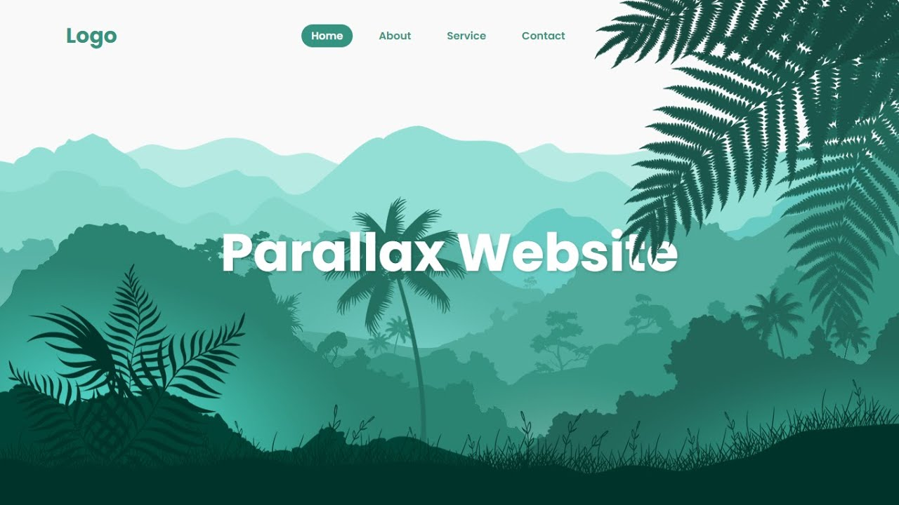

My Projects
-
Restaurant Website
Showcase your solid knowledge of HTML and CSS creating a beautiful webpage for a restaurant. Making a layout for a restaurant will be a bit complicated than previous project examples. You will be aligning the different food items and drinks using a CSS layout grid. You will be adding prices, images and you need to give it a beautiful look and feel as well using the proper combination of colors, font-style and images. You can add pictures gallery for different food items, you can also add sliding images for a better look. Add links for redirection to internal pages. Make it responsive setting a viewport, using media queries and grid. You can take help from the link given below.

-
Parallax Website
A parallax website includes fixed images in the background that you can keep in place and you can scroll down the page to see different parts of the image. With basic knowledge of HTML and CSS, you can give a parallax effect to a website. Using the parallax effect in web designing is really popular and it gives beautiful look and feels to the webpage. Give it a try and divide the whole page into three to four different sections. Set 3-4 background images, align the text for different sections, set margin and padding, add background-position and other CSS elements and properties to create a parallax effect. You can take help from the link given below.
 -
Landing Page
A landing page is another good project you can make using HTML and CSS but it requires a solid knowledge of these two building blocks. You will be using lots of creativity while making a landing page. You will practice how to add footer and header, create columns, align-items, divide the sections and a lot of things. You will have to use CSS carefully keeping in mind that different elements do not overlap with each other. You will also take care of color combinations, padding, margin, space between sections, paragraphs, and boxes. Color combinations should go well with each other for different sections or backgrounds.